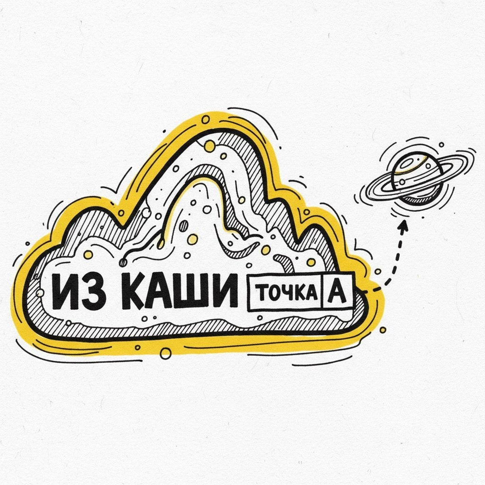
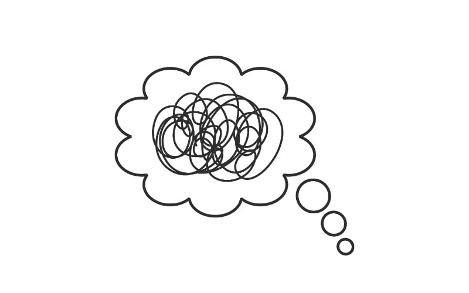
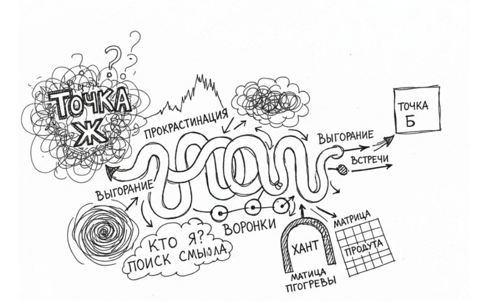
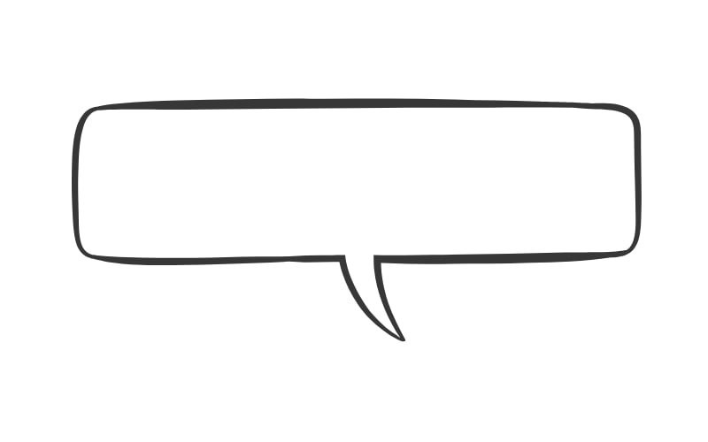
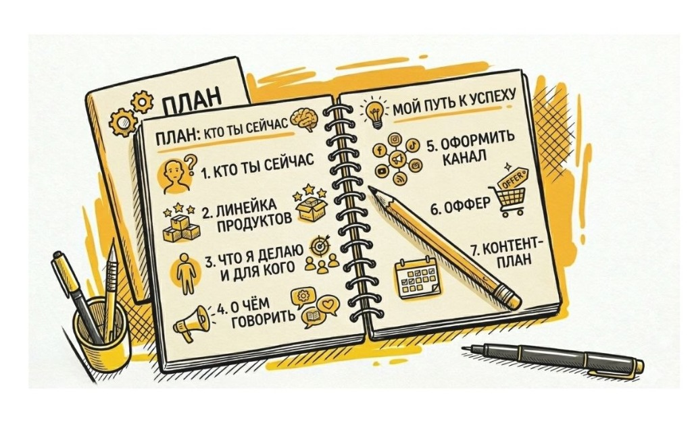
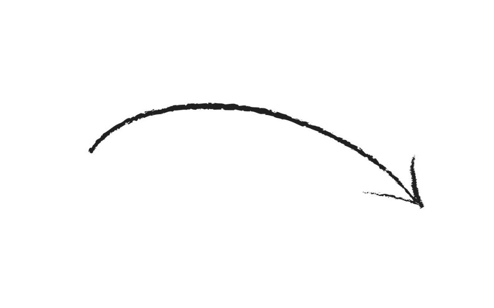

Из “каши в продукт с ИИ”
по авторскому методу.
«Много всего умею, а нормально собрать и продавать не могу»
За 3 дня ты перестаёшь быть "экспертом, у которого всё есть, но нечего показать" — выходишь с продуктом, входом и планом действий

Кому сюда

У тебя уже есть опыт, навыки, куча дипломов и сертификатов, но нет одного понятного вектора, кто ты и с чем выходишь.
У тебя несколько направлений: игры, консультации, марафоны офлайн/онлайн, и всё это живёт отдельными кусками.
Тебе надоело жить в режиме вечной подготовки: то шапка профиля, то идеальное позиционирование, то «ещё немного допилю и выйду».
Хочется просто: понять себя, собрать из этого один адекватный формат и наконец «пошёл делать»
В голове список «надо бы»: канал, офферы, линейка, портфолио, но не понятно, с какой стороны к этому подступиться.
Соцсети либо не ведёшь, либо ведёшь «от случая к случаю», без системы, и это забирает кучу сил.
Приветствую тебя!
Я Оксана Кучина
Автор метода «Из каши в продукт с ИИ» для экспертов, у которых много опыта и направлений, но нет одной понятной системы.
Я сама мультипотенциал: за плечами офлайн‑бизнес, продюсирование, монтаж, визуал, коучинг, нейросети — и именно из своей личной каши я собрала этот метод, а не из учебника по маркетингу.
С 2016 года работаю онлайн: от одиночных экспертов до конференций и онлайн‑школ, с клиентами из России и Европы.
Более 4х лет использую ИИ как рабочий инструмент в реальных проектах: не для «красивых картинок», а для сборки продуктов, анализа аудитории, контента, нейрофото и нейровидео.
Клиенты часто говорят, что это «первый раз, когда про меня попали без воды и общих фраз», и что результат «превзошел все ожидания» и дал понятный путь, а не очередную распаковку ради распаковки.
Как это выглядит в жизни
Таня заходила с ощущением «полный хаос в голове, даже не могу выразить», а на выходе увидела структуру, получила повышение и стала внедрять свой продукт в реальных компаниях.
У Елены после первой работы по методу сложилась картина «как, что, в каком формате и кому продавать», появились 4 сформулированных продукта и понимание, как запускать их в продажу, а не держать в голове.
Как устроен метод
«Из каши в продукт с ИИ»

Вся программа держится на готовой структуре промптов. Тебе не нужно изучать основы промпт‑инжиниринга, перерывать интернет и ломать голову «как правильно спрашивать ИИ» — ты просто идёшь по шагам и отвечаешь на понятные вопросы. По мере прохождения шагов ты собираешь полную картину о себе и своём продукте, а параллельно уходит страх перед ИИ: ты начинаешь разговаривать с ним как с нормальным рабочим инструментом, а не с магической чёрной коробкой.
День 1. Кто ты и на что опереться
- ты отвечаешь на вопросы, а готовые запросы ИИ (промпты) помогают вытащить из твоего опыта главное: сильные стороны, ценности, реальные кейсы и запросы людей, а не то, что «красиво звучит».
- На выходе — простое, живое описание тебя как эксперта, от которого не хочется откреститься.
День 2. Продукт из твоей “каши”
- Через цепочку промптов мы собираем из разрозненных идей один рабочий продукт или линейку: что именно делаешь, для кого, в каком формате.
- Ты видишь варианты от ИИ, выбираешь, что откликается, встречаемся и вместе доводим до вменяемого вида.

День 3. Вход, блог и план действий
- Промпты помогают сформулировать понятный «вход»: как назвать то, что ты делаешь, как объяснить это людям простым языком.
- На этой же основе собирается каркас блога и список конкретных шагов: что делать и говорить в ближайшие недели.
Про ИИ по‑честному
ИИ здесь не про «давай всё сделает нейросеть», а про то, чтобы ускорить твои решения: ТЫ отвечаешь, а он структурирует и предлагает варианты “из тебя” на основе твоих навыков и дипломов, а ты учишься управлять этим как профессионал — и страх «вдруг я неправильно спрошу» уходит в процессе.
Что у тебя будет на выходе

- Один понятный фокус: кто ты сейчас как эксперт и с чем выходишь к людям, без «у меня консультации и марафоны, и ещё вот это чуть‑чуть».
- Собранный продукт или простая линейка: что именно ты продаёшь, в каком формате и за счёт чего это может приносить деньги, а не висеть в планах.
- Чёткий вход для людей: нормальное название, простое объяснение «что я делаю и для кого», которое не стыдно написать в шапку и сказать вслух.
- Каркас канала/соцсетей: о чём говорить, какие рубрики держать и как связать контент с продуктом, чтобы это было не «просто постики».
- Список конкретных действий на ближайшие недели: что делаем первым, что откладываем, а от чего можно отказаться спокойно.
Отдельно: всё это ты делаешь не «из головы», а по понятной структуре с ИИ — как через конструктор, где каждый шаг логично вытекает из предыдущего, а не через месяцы блужданий по маркетинговым курсам.
Формат работы
- Это не «3 дня и сгорел срок», а ориентир, чтобы ты не завис в саботаже. Можно пройти шаги за неделю, но структура заточена под короткий рывок, а не растяжку на месяцы.
- Программа идёт внутри клуба «ПОИСКология с AI»: у нас есть живые групповые встречи, чат участников и библиотека решений с ИИ, чтобы ты не варился(ась) один.
- Ты работаешь в рекомендованных нейросетях, доступных в твоей стране, так что “танцев с бубном” не будет точно.
- Небольшие уроки, где показываю как проходить шаг и инструкции в формате Word документа.
- Ты проходишь шаги с ИИ и по готовой структуре запросов ИИ (промптов), в своём ритме, но без бесконечного «потом».
- С каждым я встречаюсь индивидуально на шаге сборки: мы финалим продукт/линию, понятный вход находим твой Лид-магнит, чтобы ты вышел(ла) не с «намешанной кашей», а с чистым, понятным предложением для своей ЦА.
- Если по ходу видно, что одного созвона мало, возможна вторая индивидуальная встреча — но в большинстве случаев мы укладываемся в одну.
Принципиальные правила
- Я не делаю за тебя: задача формата — чтобы ты сам(а) смог(ла) собирать и повторять шаги, а не зависеть от продюсеров и исполнителей.
- Есть отдельный тариф, где я могу взять часть работы на себя, но базовый метод рассчитан на самостоятельность и повторяемость, в том числе когда ты пойдешь в масштабирование.
- Никакого режима «сидим во мне 24/7»: мы работаем, в понятных окнах и по структуре, а не в формате бесконечных обсуждений и доработок.
До / После про КШП
До: «Захожу: полный хаос в голове, который даже не могу выразить.»
После: «Вижу структуру, меня повысили, сделали новую должность, и я понимаю, как внедрять свой продукт в компании.»
До: «Нет понимания, как вести канал, чтобы через него были продажи. Они есть, но немного.»
После: «Сложилось понимание о себе и своём месте в моих идеях, подтвердилось намерение развивать проект и стало видно, как от него перейти к чему-то более масштабному.»
До: «Никак не могу собрать канал, всё время меняю названия и подход. Долго собираю себя “КТО Я?”»
После: «Из шагов сложилась простая и ёмкая картина, я написала первую вступительную часть в канал, услышала свою подачу и стиль “вот такая, какая я есть”.»
Экспресс‑разгон как вход
Если ты ещё сомневаешься, «моё ли это» или не готов(а) сразу заходить “Из каши в продукт с ИИ” начни с экспресс‑разгона. Это короткая встреча, чтобы не покупать кота в мешке и понять, есть ли смысл идти дальше.
Для кого экспресс‑разгон
- Ты чувствуешь тупик или расфокус: много всего, но не понимаешь, с чего начать.
- Думаешь про метод, но не до конца веришь, что он «сядет» именно на твою ситуацию.
- Есть ощущение смены приоритетов, но неясно, туда ли ты сейчас идёшь и стоит ли вообще лезть в новый продукт.
Что происходит за 10–20 минут
- По простой технике за 10–20 минут мы собираем текущую картину: что у тебя сейчас на первом месте, где ты буксуешь и куда тебе смотреть дальше.
- Разговор концентрированный, без воды и «копаний в детстве»: только то, что важно, чтобы принять решение, что делать дальше.
Что решаем на разгонах
- Ты видишь свою точку роста и понимаешь, в целом ты на своём пути или нет.
- Становится ясно, с чем логично заходить в “КШП”, если заходить, и есть ли смысл делать это именно сейчас, а не «когда‑нибудь»
- Если понимаем, что формат сейчас не нужен — честно так и фиксируем, без давления и попыток «допродать любой ценой»
Как записаться
- Пишешь мне в удобный мессенджер фразу «Разгон» — и мы договариваемся о времени на будни с 9-17:00мск.
- После встречи ты решаешь сам(а): берёшь только этот толчок или пока оставляем как есть.
Кому прямо сейчас
“Из каши в продукт с ИИ”
- У тебя уже есть опыт, клиенты или хотя бы понимание своей темы, но нет одного собранного продукта и внятного входа для людей.
- Ты готов(а) выделить время на короткий рывок и принимать решения, а не уходить в очередной круг «подумать».
- Ты хочешь не просто «разобраться в себе», а выйти с конкретным результатом: продукт, вход, план действий.
Кому сначала на
экспресс‑разгон
- Ты слышишь про метод первый раз и хочешь сначала почувствовать, как я работаю.
- Не уверен(а), что сейчас вообще нужен новый продукт или смена направления.
- Есть ощущение тупика или расфокуса, но пока не понимаешь, в чём именно.
Следующий шаг
Пиши мне в Telegram или Макс слово «КШП» — если готов(а) сразу координально на сборку своего проекта.
Или «Разгон» — если хочешь сначала короткую встречу и ясность.
Без длинных анкет и прогревов: просто напиши, и мы разберёмся, что тебе нужно прямо сейчас.
